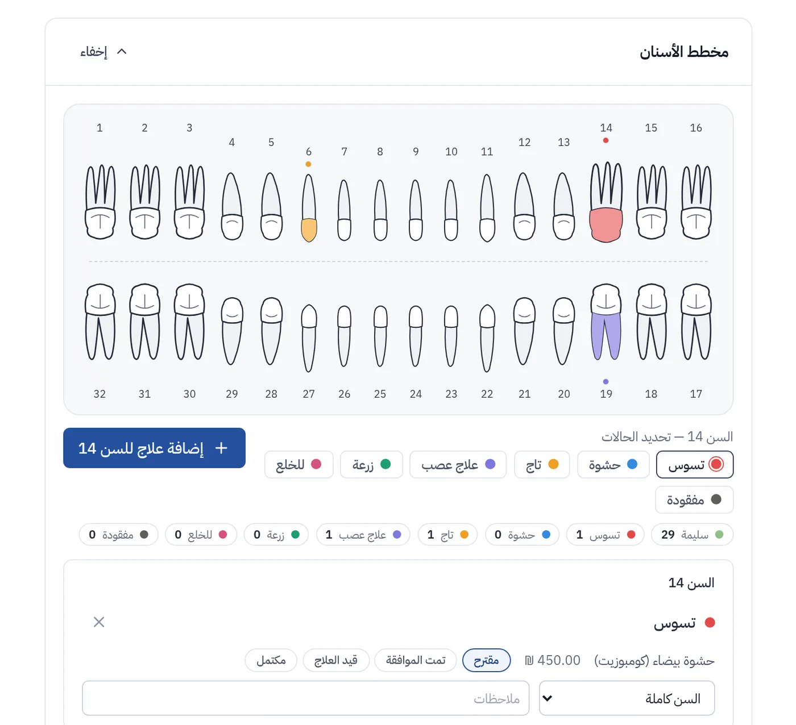
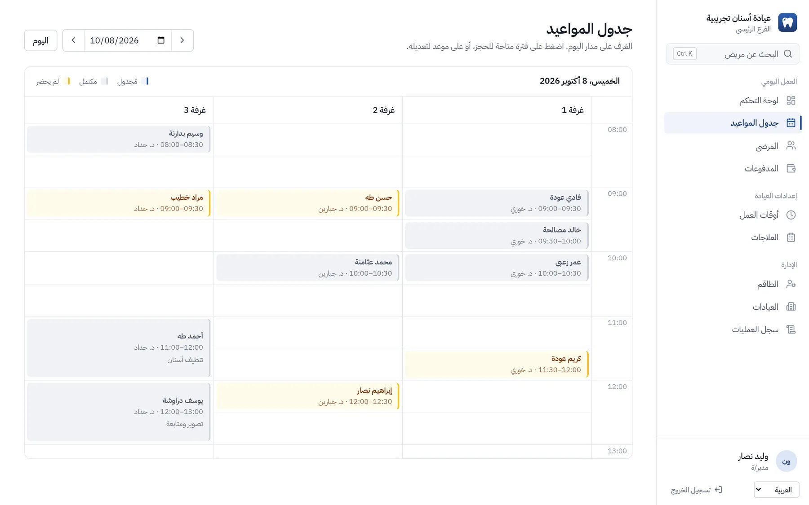
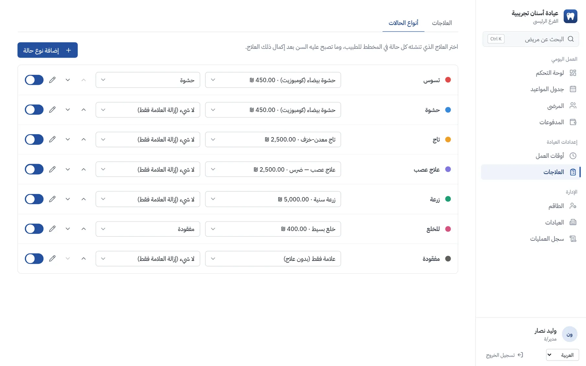

العيادة كلها، من مخطط الأسنان.
ClinicLine برنامج لعيادات الأسنان: المواعيد وملفات المرضى وخطط العلاج والمدفوعات في مكان واحد، بالعربية والعبرية والإنجليزية.


ثلاث لغات
العربية والعبرية والإنجليزية، من اليمين إلى اليسار حيث يلزم.
نظام خاص لكل عيادة
قاعدة بيانات خاصة بها، لا يشاركها أحد.
نسخ احتياطي كل ليلة
نسخ تُحفظ بعيدًا عن الخادم.
يعمل في المتصفح
لا شيء لتثبيته على حواسيب العيادة.
ماذا يقدّم
كل ما يتعامل معه الاستقبال والأطباء والمالك خلال يوم العمل.
المواعيد
عرض يومي لكل طبيب ولكل غرفة. يُكتشف الحجز المزدوج قبل أن يحدث.
ملفات المرضى
بيانات الاتصال والتاريخ المرضي والحساسية والمواعيد والملاحظات. ابحث عن أي مريض برقم الهوية أو بالاسم.
مخطط الأسنان
اضغط على سن لتسجيل حالة. يُضاف العلاج إلى الخطة، وعند إكماله يتحدّث المخطط.
خطط العلاج
تأتي الإجراءات من قائمة أسعار عيادتك وتنتقل من «مقترح» إلى «مكتمل».
المدفوعات والرصيد
استلم نقدًا أو بالبطاقة أو بالحوالة البنكية أو بالشيك أو عبر Bit. احتفظ برصيد لكل مريض وتعرّف على من عليه كم.
الصور والأشعة
احفظ صور الأشعة والصور في ملف كل مريض، ولا يراها إلا الأطباء والمديرون.
عدة فروع
حساب واحد لكل فروعك. المرضى مشتركون، والموظفون يُسنَدون إلى الفروع التي يعملون فيها.
ثلاث لغات
العربية والعبرية والإنجليزية. تُعرض العربية والعبرية من اليمين إلى اليسار.
هكذا يبدو
شاشات حقيقية من ClinicLine، ببيانات تجريبية وهمية.

كل شخص يرى ما تحتاجه وظيفته
الأطباء
مواعيدهم ومخططات مرضاهم وخطط العلاج والصور.
الاستقبال
مواعيد اليوم كلها، وتسجيل الوصول والمدفوعات. دون الاطلاع على الصور.
المديرون
الموظفون والفروع وقائمة الأسعار وإعدادات المخطط والصلاحيات.
بيانات مرضاك تبقى لك
ملف المريض خاص. هكذا يتعامل معه ClinicLine.
نظام خاص بك
تعمل كل عيادة على حدة بقاعدة بيانات خاصة بها. لا يُشارك شيء مع العيادات الأخرى.
اتصال مشفّر
كل الاتصالات تمر عبر HTTPS.
نسخ احتياطي كل ليلة
تُحفظ النسخ بعيدًا عن الخادم، وقد جرّبنا الاستعادة منها.
تسجيل الوصول
يمكنك أن ترى من فتح ملف مريض أو غيّره، ومتى.
دخول حذر
يجب تغيير كلمة المرور الجديدة عند أول دخول، والمحاولات الخاطئة المتكررة تقفل الحساب، والتحقق بخطوتين متاح.
خذ بياناتك معك
اطلب في أي وقت فنسلّمك نسخة كاملة: ملفات المرضى والجداول والصور.
كيف نبدأ
حدّثنا عن عيادتك
كم فرعًا لديك، ومن يعمل فيها، وبأي لغات يعمل فريقك.
نحن نجهّز النظام
قائمة أسعارك وحسابات فريقك واسم عيادتك، في نظام مستقل.
يبدأ فريقك الدخول
يغيّر كل شخص كلمة مروره المؤقتة عند أول دخول، وتبدأ العمل.
شاهده أولًا ببيانات تجريبية
اطلب عرضًا تجريبيًا وسنرسل لك رابطًا خاصًا إلى عيادة تجريبية مليئة بمرضى وهميين، تتصفحها بالسرعة التي تناسبك.
أسئلة
هل أحتاج إلى تثبيت شيء؟
لا. يعمل في المتصفح على أي حاسوب أو جهاز لوحي أو هاتف.
أين تُحفظ بياناتي؟
في قاعدة بيانات عيادتك الخاصة على خادم ندير شؤونه. نتفق معك على منطقة الاستضافة.
هل أستطيع أخذ بياناتي إذا غادرت؟
نعم. نصدّر ملفات المرضى والجداول والصور متى طلبت.
هل تستطيع عدة فروع استخدامه؟
نعم. تتشارك الفروع قائمة مرضى واحدة، ويُسنَد كل موظف إلى الفروع التي يعمل فيها.
ما اللغات المدعومة؟
العربية والعبرية والإنجليزية. يمكن تحديد لغة واحدة للعيادة كلها، أو ترك كل موظف يختار لغته.
كم يكلّف؟
يعتمد على عدد الفروع والموظفين. أرسل لنا رسالة وسنعطيك عرض سعر.
حدّثنا عن عيادتك
اكتب بضعة أسطر وسنعاود الاتصال بك، عادةً خلال يوم عمل.